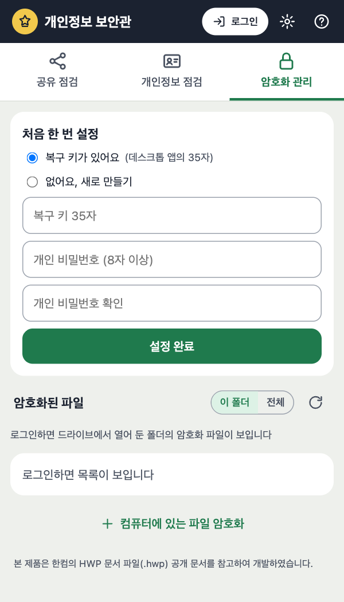
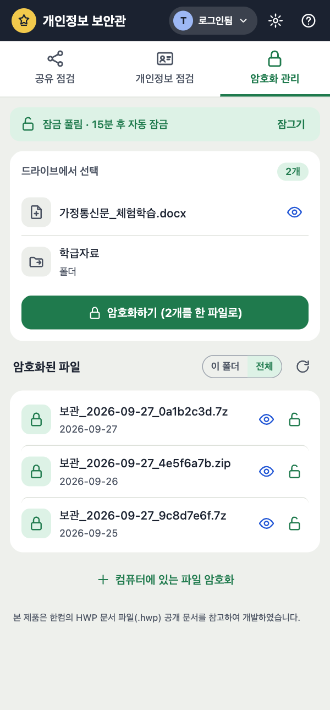
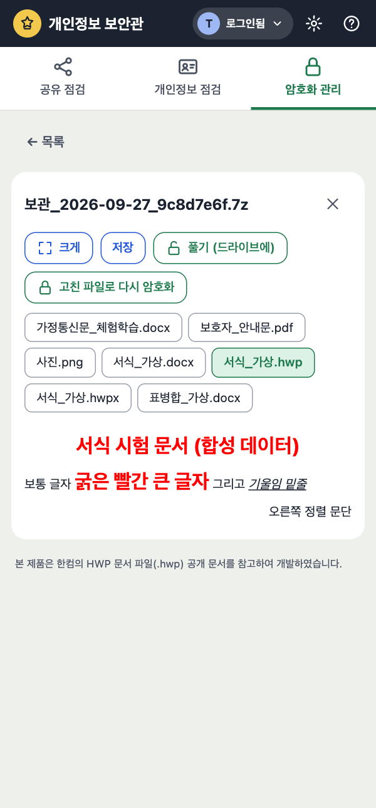
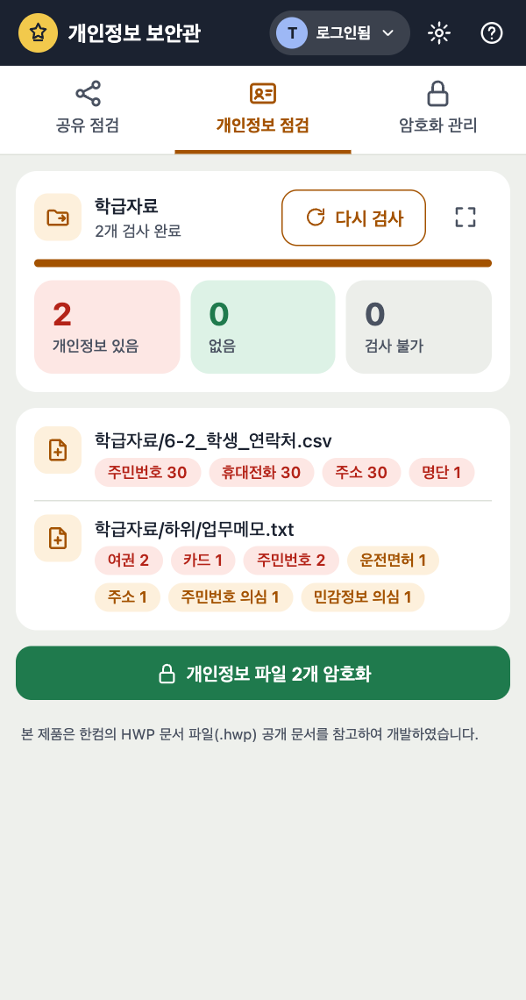
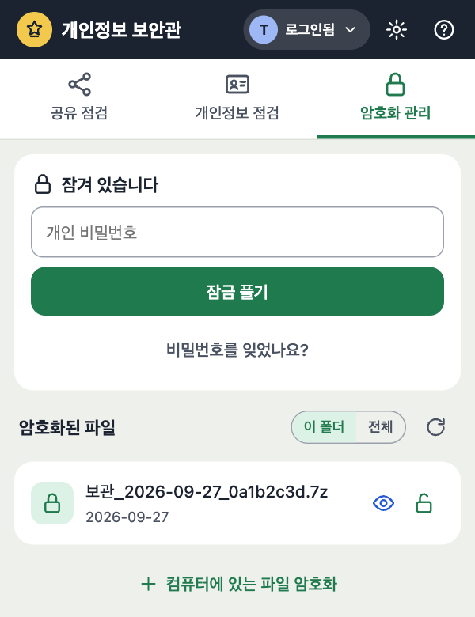
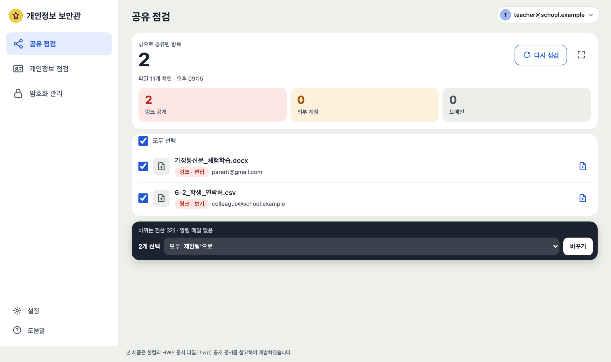

시작하기
처음 한 번만 합니다.

1234- 1로그인 — 구글 계정 선택 → 「계속」 → 모든 항목 체크
- 2복구 키 — 데스크톱 앱의 35자 (없으면 「새로 만들기」, 종이에 적어 두기)
- 3개인 비밀번호 — 매일 쓸 비밀번호 (8자 이상)
- 4설정 완료
그 전에: 확장 프로그램 설치(개발자 모드) → ⚙ 설정에 클라이언트 ID 저장.
암호화 관리
드라이브에서 고르고, 한 번에 암호화합니다.

12345- 1드라이브에서 파일·폴더를 선택하면 여기에 나타납니다
- 2암호화하기 — 같은 폴더에 암호화 파일이 생기고 원래 파일은 휴지통으로
- 3열기 — 드라이브 위에 크게 보기
- 4풀기 — 그 자리에 원래 파일로 되돌리기
- 5잠그기 — 15분 동안 안 쓰면 저절로 잠김
드라이브에서 암호화 파일을 더블클릭해도 크게 열립니다. 한글 파일도 미리보기 됩니다.
파일 보기
암호를 푼 내용은 이 화면에만 있고 저장되지 않습니다.

12345- 1안의 파일 이름을 눌러 바꿔 보기
- 2크게 — 드라이브 위에 크게
- 3풀기 — 드라이브에 원래 파일로
- 4고친 파일로 다시 암호화
- 5✕ — 닫으면 메모리에서 지워짐
공유 점검
내 드라이브 전체에서 밖으로 공유된 파일을 찾아 한 번에 막습니다.
 123456
123456- 1점검 시작 (파일 내용은 읽지 않음)
- 2칸을 누르면 그 종류만 보기 — 링크 공개 외부 계정 도메인
- 3바꿀 항목 체크 (또는 모두 선택)
- 4할 일 고르기 — 예: 모두 「제한됨」으로
- 5바꾸기 — 잘못했으면 「↩ 되돌리기」
- 6⛶ — 드라이브 위에 크게
상위 폴더에서 온 권한은 건너뜁니다 — 그 폴더를 바꾸세요. 알림 메일은 가지 않습니다.
개인정보 점검
고른 파일·폴더에서 주민번호·전화번호 등을 찾습니다.

12345- 1드라이브에서 파일·폴더 선택
- 2검사
- 3결과 요약 — 있음 · 없음 · 검사 불가
- 4파일마다 찾은 종류와 건수 (원문은 보여 주지 않음)
- 5개인정보 파일 암호화
「검사 불가」(스캔 PDF·사진 등)는 안전하다는 뜻이 아닙니다. 드라이브 전체 검사는 데스크톱 앱에서 하세요.
잠금 풀기
개인 비밀번호 한 번이면 모든 암호화 파일이 열립니다.

123- 1개인 비밀번호 입력
- 2잠금 풀기
- 3잊었으면 — 복구 키로 열고 새 비밀번호 정하기
새 탭에서 크게
계정 버튼(로그인됨 ▾) → 「새 탭에서 크게 열기」.

123- 1왼쪽 메뉴로 기능 바꾸기
- 2계정 — 로그아웃
- 3설정 · 도움말
문제 해결
| 이럴 때 | 이렇게 |
|---|---|
| 「드라이브와 연결 안 됨」 | 드라이브 탭 새로고침 (Mac ⌘R · Windows F5) |
| 드라이브에서 골라도 안 나옴 | 확장 프로그램 ↻ 새로고침 → 드라이브 탭 새로고침 |
| 로그인 창이 또 나옴 | 권한 화면에서 모든 항목을 체크했는지 확인 |
| 복구 키가 안 맞음 | 35자 확인 (0/O · 1/I · 8/B는 자동 처리) |
| 아주 큰 폴더·파일 | 데스크톱 앱 사용 |
안전: 구글 드라이브 외에는 접속하지 않고, 풀린 내용은 저장하지 않습니다. 영구 삭제는 하지 않습니다(휴지통 30일).